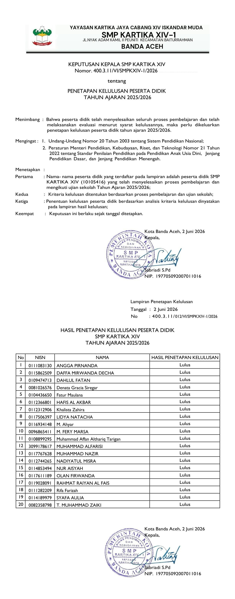

Foto: Surat Keputusan Kelulusan Nomor 400.3.11/VI/SMPKXIV-1/2026 yang ditandatangani Kepala Sekolah
BANDA ACEH – Suasana haru dan bangga menyelimuti keluarga besar SMP Kartika XIV-1 Banda Aceh. Berdasarkan hasil rapat pleno dewan guru, sekolah secara resmi mengumumkan bahwa seluruh siswa kelas IX tahun pelajaran 2025/2026 dinyatakan lulus 100 persen.
Sebanyak 20 siswa yang mengikuti asesmen dan seluruh rangkaian proses pembelajaran hingga akhir, berhasil menyelesaikan pendidikan mereka di tingkat sekolah menengah pertama dengan hasil yang memuaskan.
Keputusan resmi ini tertuang dalam Surat Keputusan (SK) Kelulusan Nomor: 400.3.11/VI/SMPKXIV-1/2026, tertanggal 2 Juni 2026, yang ditandatangani langsung oleh Kepala SMP Kartika XIV-1 Banda Aceh, Sabriadi, S.Pd.
Kepala SMP Kartika XIV-1 Banda Aceh, Sabriadi, S.Pd., menyampaikan rasa syukur dan apresiasi yang setinggi-tingginya kepada seluruh siswa, guru, dan orang tua wali murid yang telah bekerja sama dengan baik selama ini.
"Kelulusan 100 persen ini adalah buah dari kerja keras, disiplin, dan ketekunan para siswa, serta dedikasi luar biasa dari para guru yang tiada henti membimbing. Kami juga berterima kasih kepada orang tua siswa yang selalu memberikan dukungan penuh dari rumah," ujar Sabriadi dalam keterangannya.
Beliau juga berpesan kepada 20 lulusan tersebut agar tidak cepat berpuas diri dan tetap menjaga nama baik almamater di mana pun mereka melanjutkan pendidikan.
Dengan terbitnya SK Kelulusan ini, pihak sekolah berharap para alumni muda SMP Kartika XIV-1 Banda Aceh dapat bersaing dan mengukir prestasi di jenjang yang lebih tinggi, baik di SMA, SMK, maupun madrasah aliyah favorit pilihan mereka.
Reporter: Admin
Kembali ke Berita